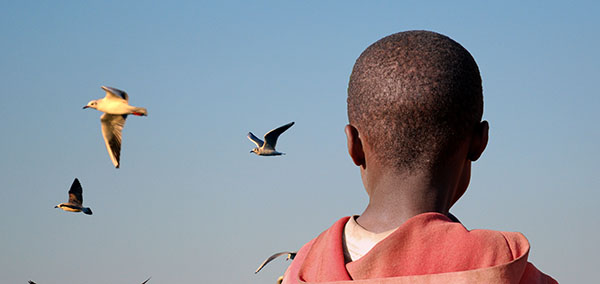
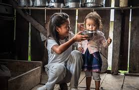

გაინტერესებთ ვინ ვართ?!
საქველმოქმედო ორგანიზაცია, რომელიც ააშენებს უსახლკარო ბავშვების თავშესაფრებს თითოეულ ქვეყანაში,
სადაც
ჩვენ
ვმუშაობთ. ეს თავშესაფარი მოიცავს ახალგაზრდებს 6 კვირამდე, ამ დროის განმავლობაში ჩვენ
დავეხმარებით
მათ
შვილად
აყვანაში. , აღზრდილი ან სამსახურში მოთავსებული ასაკიდან გამომდინარე. ბავშვებისთვის (15 წლამდე),
ისინი
შეიძლება დარჩნენ თავშესაფარში 3 თვემდე. თავშესაფარი ასევე მოემსახურება როგორც საკვების საკუჭნაოს
მასში
მცხოვრებთათვის და მათ მიმდებარე თემებში. ჩვენ ასევე ვიქირავებ საოფისე ფართს, რომელიც გაორმაგდება
როგორც
საზოგადოებრივი ცენტრი/საკვების საცავი.
სურსათის საკუჭნაოები გაიხსნება კვირაში შვიდი დღე და მარაგდება ფერმებით, რომლებსაც ჩვენ ვეხმარებით
განვითარებაში.
ამ საკუჭნაოებს ასევე ექნება წვნიანი სამზარეულოს კომპონენტი, სადაც ადგილობრივებს შეუძლიათ მიიღონ ერთი
ცხელი
კვება
(წვნიანი და ა.შ.) ან სენდვიჩი ყოველ დღე, იმის მიხედვით, თუ რა არის ხელმისაწვდომი.
ჩვენ უზრუნველვყოფთ საკვებით გაჭირვებულებს და საჭიროებისამებრ დავეხმარებით ფერმერებს ხელსაწყოებით,
თესლებით
და
სხვა საჭირო ნივთებით. ჩვენ დავაფინანსებთ სოფლის მეურნეობის პროგრამებს სკოლებში და ვასწავლით
ფერმერებს, როგორ
გამოიყენონ თანამედროვე სასოფლო-სამეურნეო ტექნიკა. ჩვენ ასევე მივცემთ ადგილობრივ სოფლის მოსახლეობას
უფლებას,
რომ
იყვნენ თვითკმარი სათემო საოჯახო პროგრამების მიწოდებით და ცოცხალი მარაგის მოვლის გაუმჯობესებით.
საჭიროებისამებრ
თითოეულ სოფელში მოვაწყობთ კვების საკუჭნაოებს.
